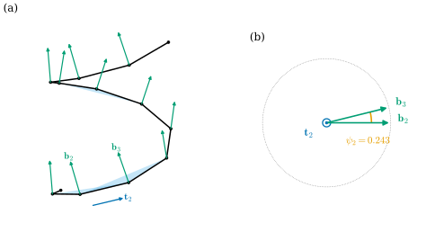
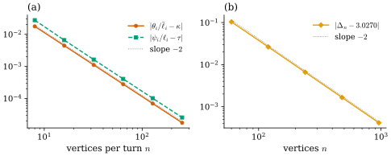

37.5 Discrete Space Curves
Goals
- space polygon의 vertex마다 curvature angle과 discrete binormal을, edge마다 부호 있는 discrete torsion angle을 정의하고 계산할 수 있다.
- edge length, curvature angle, torsion angle이 space polygon을 rigid motion을 제외하고 결정한다는 fundamental theorem을 증명하고, 복원 algorithm을 구현할 수 있다.
- discrete parallel transport와 discrete Bishop frame을 정의하고, 그것이 binormal에 대해 edge마다 \(-\psi_i\)씩 돈다는 것과 closed curve의 holonomy가 \(-\sum\psi_i\)임을 증명할 수 있다.
- sampling한 helix와 trefoil에서 discrete 양이 smooth 양으로 이차 수렴하는 것을 확인할 수 있다.
Prerequisites
- Section 37.4: regular discrete curve Definition 37.4.2, fundamental theorem Theorem 37.4.6.
- Section 37.3: Frenet frame과 torsion의 부호 (37.3.1), Bishop frame Definition 37.3.8, Bishop과 Frenet의 관계 Proposition 37.3.10, holonomy Proposition 37.3.13.
- Chapter 32: dual length \(\bar\ell_i\) (32.3.3), discrete curvature Definition 32.3.5.
- 회전 행렬과 cross product: rigid motion of \(\R^3\) Definition 5.4.3.
Motivation
Section 37.4는 plane polygon이 edge length와 turning angle로 정확히 결정된다는 것을 보였다. Section 37.3은 space curve에서 curvature에 더해 torsion이 필요하고, Frenet frame 대신 Bishop frame을 쓰면 곧은 구간에서도 frame이 정의된다는 것을 보였다. 이 절은 두 결과를 합친다. 다각형이 공간에 있으면 무엇이 curvature와 torsion의 역할을 하는가?
vertex에서 꺾이는 각은 여전히 잴 수 있지만 부호는 사라진다. 대신 vertex마다 “꺾이는 평면”이 하나 있고, 그 평면이 이웃 vertex로 가며 edge 둘레로 도는 각이 torsion이 된다. smooth의 경우처럼 이 정보만으로 다각형이 rigid motion을 제외하고 정해지고, smooth의 경우와 달리 증명이 유한한 회전의 곱이다. 마지막으로 Section 37.3의 Bishop frame을 다각형에서 만든다. 이것이 discrete elastic rod 같은 응용에서 쓰이는 frame이다.
Curvature Angles, Binormals, and Torsion Angles
Definition 37.5.1 (discrete space curve). Definition 32.2.8에서 점이 \(\R^3\)에 있는 것을 discrete space curve(이산 공간곡선)라 한다. edge vector, edge length, discrete tangent \(e_i, \ell_i, \mathbf{t}_i\)와 dual length \(\bar\ell_i\), 그리고 regularity(Definition 37.4.2, \(\mathbf{t}_i \neq -\mathbf{t}_{i-1}\))는 plane curve와 같이 정의한다.
공간에서는 진행 방향의 “왼쪽”이 정해지지 않으므로 turning angle의 부호를 정할 수 없다. 남는 것은 크기다.
Definition 37.5.2 (curvature angle). regular discrete space curve의 vertex \(i\)에서 \(\mathbf{t}_{i-1}\)과 \(\mathbf{t}_i\) 사이의 각
를 vertex \(i\)의 curvature angle(곡률각)이라 한다. \(\kappa_i = \theta_i/\bar\ell_i\)를 vertex \(i\)의 pointwise discrete curvature라 한다.
plane polygon을 \(xy\)평면 위의 space curve로 보면 curvature angle은 turning angle의 절댓값이다. 곧 Chapter 32의 \(\kappa^A_i\)에서 부호를 뗀 것이고, smooth의 \(\kappa = \abs{\kappa_s}\)(Proposition 5.1.5)에 해당한다. 공용 구현의 dgdec.turning_angles는 3차원 입력에서 이 값을 준다.
Definition 37.5.3 (discrete binormal). vertex \(i\)에서 \(0 \lt \theta_i \lt \pi\)이면 단위벡터
를 vertex \(i\)의 discrete binormal(이산 종법선)이라 한다. \(\theta_i = 0\)이면 정의하지 않는다.
\(\mathbf{b}_i\)는 세 vertex \(\gamma_{i-1}, \gamma_i, \gamma_{i+1}\)을 지나는 평면의 unit normal이다. 이 평면은 다각형이 vertex \(i\)에서 꺾이는 평면이고, smooth의 osculating plane(Definition 5.1.9)의 discrete 판이다. 방향은 \(\mathbf{t}_{i-1}\)에서 \(\mathbf{t}_i\)로 꺾는 회전의 축이 되게 골랐다.
Lemma 37.5.4 (turning in the osculating plane). 단위벡터 \(\mathbf{t}\)와 \(\mathbf{b} \perp \mathbf{t}\), 각 \(\theta \in (0, \pi)\)에 대하여 \(\mathbf{t}\)를 \(\mathbf{b}\) 둘레로 오른손 규칙의 각 \(\theta\)만큼 돌린 vector
는 \(\mathbf{t}\)와 각 \(\theta\)를 이루고 \(\mathbf{t} \times \mathbf{t}'/\abs{\mathbf{t} \times \mathbf{t}'} = \mathbf{b}\)이다. 거꾸로 vertex \(i\)에서 \(0 \lt \theta_i \lt \pi\)이면 \(\mathbf{t}_i = R(\mathbf{b}_i, \theta_i)\,\mathbf{t}_{i-1}\)이다.
Proof. \(\mathbf{b} \perp \mathbf{t}\)이므로 \((\mathbf{t}, \mathbf{b} \times \mathbf{t}, \mathbf{b})\)는 positively oriented orthonormal basis이고, (37.5.3)은 Rodrigues 공식 \(R(\mathbf{b}, \theta)v = \cos\theta\,v + \sin\theta\,\mathbf{b} \times v + (1 - \cos\theta)\inner{\mathbf{b}}{v}\mathbf{b}\)에 \(v = \mathbf{t}\)를 넣은 것이다. \(\inner{\mathbf{t}}{\mathbf{t}'} = \cos\theta\)이고, \(\mathbf{t} \times (\mathbf{b} \times \mathbf{t}) = \mathbf{b}\inner{\mathbf{t}}{\mathbf{t}} - \mathbf{t}\inner{\mathbf{t}}{\mathbf{b}} = \mathbf{b}\)이므로 \(\mathbf{t} \times \mathbf{t}' = \sin\theta\,\mathbf{b}\)이고, \(\sin\theta \gt 0\)이다. 거꾸로 \(\mathbf{t}_i\)는 \(\mathbf{t}_{i-1}\)과 \(\mathbf{b}_i \times \mathbf{t}_{i-1}\)이 펼치는 평면에 있고(둘 다 \(\mathbf{b}_i\)에 수직), \(\inner{\mathbf{t}_{i-1}}{\mathbf{t}_i} = \cos\theta_i\), \(\inner{\mathbf{b}_i \times \mathbf{t}_{i-1}}{\mathbf{t}_i} = \inner{\mathbf{b}_i}{\mathbf{t}_{i-1} \times \mathbf{t}_i} = \sin\theta_i\)이므로 \(\mathbf{t}_i = \cos\theta_i\mathbf{t}_{i-1} + \sin\theta_i\,\mathbf{b}_i \times \mathbf{t}_{i-1}\)이다.
이웃한 두 vertex의 binormal \(\mathbf{b}_i\)와 \(\mathbf{b}_{i+1}\)은 모두 edge \(i\)의 tangent \(\mathbf{t}_i\)에 수직이다(\(\mathbf{b}_i \perp \mathbf{t}_i\)이고 \(\mathbf{b}_{i+1} \perp \mathbf{t}_i\)). 그래서 둘 사이의 각을 \(\mathbf{t}_i\) 둘레로 부호를 붙여 잴 수 있다.
Definition 37.5.5 (discrete torsion angle). edge \(i\)의 양 끝 vertex에서 \(\mathbf{b}_i\)와 \(\mathbf{b}_{i+1}\)이 정의되면, \(\mathbf{t}_i\) 둘레로 오른손 규칙으로 잰 \(\mathbf{b}_i\)에서 \(\mathbf{b}_{i+1}\)로의 각
를 edge \(i\)의 discrete torsion angle(이산 비틀림각)이라 한다. 곧 \(\mathbf{b}_{i+1} = R(\mathbf{t}_i, \psi_i)\,\mathbf{b}_i\)이다. \(\tau_i = \psi_i/\ell_i\)를 edge \(i\)의 pointwise discrete torsion이라 한다.
curvature angle은 vertex에, torsion angle은 edge에 붙는다. smooth 쪽에서 보면 \(\theta_i\)는 vertex 둘레 조각(길이 \(\bar\ell_i\)) 위의 \(\kappa\)의 적분, \(\psi_i\)는 edge(길이 \(\ell_i\)) 위의 \(\tau\)의 적분에 해당한다. 부호는 §6.2와 맞춘 것이다. \(\mathbf{b}' = -\tau\mathbf{n}\)이고 \(\mathbf{t} \times \mathbf{b} = -\mathbf{n}\)이므로 \(\mathbf{b}' = \tau\,\mathbf{t} \times \mathbf{b}\), 곧 smooth binormal은 \(\mathbf{t}\) 둘레로 단위 길이당 \(+\tau\)씩 돈다. (37.5.4)는 그 회전을 edge 하나만큼 적분한 것이다. 공용 구현은 dgdec.vertex_binormals, dgdec.torsion_angles, dgdec.space_curve_curvature_torsion이다.

Figure 37.5.1의 (a)에서 앞쪽 아래의 두 vertex \(\gamma_2, \gamma_3\)을 보자. 각 vertex의 초록 화살표는 그곳의 하늘색 삼각형에 수직이고, 두 삼각형은 edge \(2\)를 경첩처럼 공유하며 조금 열려 있다. 그 열린 각이 torsion angle이다. (b)는 이 경첩을 edge 방향에서 정면으로 본 것이다. 두 초록 화살표가 모두 화면 안에 놓이고, 그 사이의 주황 호가 \(\psi_2 = 0.243\)이다. 평면 다각형이면 모든 삼각형이 한 평면에 놓이므로 두 화살표가 같거나 정반대다(Example 37.5.7).
Example 37.5.6 (the sampled helix). helix \(\gamma(t) = (a\cos t, a\sin t, bt)\)를 \(t_j = j\Delta\)로 sampling하자(\(0 \lt \Delta \lt \pi\)). helix는 screw motion(\(z\)축 둘레의 \(\Delta\) 회전과 \(b\Delta\) 평행이동)에 대해 대칭이고 이 motion이 \(\gamma_j\)를 \(\gamma_{j+1}\)로 보내므로, 모든 edge의 \(\ell\)과 \(\psi\), 모든 vertex의 \(\theta\)가 같다. \(c_\Delta = 1 - \cos\Delta\)라 하고 \(t = 0\)의 vertex에서 계산하면 \(e_{-1} = (ac_\Delta, a\sin\Delta, b\Delta)\), \(e_0 = (-ac_\Delta, a\sin\Delta, b\Delta)\)이므로
이다(\(e_{-1} \times e_0 = 2ac_\Delta(0, -b\Delta, a\sin\Delta)\)에서 \(\mathbf{b}_0\)을 얻고, \(\mathbf{b}_1\)은 \(\mathbf{b}_0\)을 \(z\)축 둘레로 \(\Delta\) 돌린 것이다. 계산은 Exercise 37.5.5와 verify에 있다). \(b \gt 0\)이면 \(\psi \gt 0\)이다. running example \((a, b) = (1, 0.3)\)에서 한 바퀴에 vertex \(n\)개(\(\Delta = 2\pi/n\))이면
| \(n\) | \(\ell\) | \(\theta\) | \(\psi\) | \(\theta/\bar\ell\) | \(\psi/\ell\) |
|---|---|---|---|---|---|
| \(8\) | \(0.80081\) | \(0.74887\) | \(0.24255\) | \(0.93513\) | \(0.30288\) |
| \(16\) | \(0.40758\) | \(0.37573\) | \(0.11486\) | \(0.92186\) | \(0.28182\) |
| \(32\) | \(0.20469\) | \(0.18802\) | \(0.05667\) | \(0.91854\) | \(0.27686\) |
| \(64\) | \(0.10246\) | \(0.09403\) | \(0.02824\) | \(0.91771\) | \(0.27564\) |
이고, pointwise 값은 smooth의 \(\kappa = 0.91743\), \(\tau = 0.27523\)으로 다가간다. \(n\)을 두 배로 하면 오차가 \(1/4\)이 된다(Figure 37.5.2(a)).
Verification: verify/v-37-5-discrete-space-curves.py
Example 37.5.7 (plane polygons). \(xy\)평면의 regular polygon에서 \(\theta_i \neq 0\)인 vertex의 binormal은 turning angle(Definition 32.3.1)이 양수이면 \(e_3\), 음수이면 \(-e_3\)이다. 따라서 이웃한 두 vertex에서 꺾이는 방향이 같으면 \(\psi_i = 0\), 다르면 \(\psi_i = \pi\)다. 볼록 다각형은 모든 \(\psi_i = 0\)이지만, flower curve를 \(n = 40\)으로 sampling한 다각형에서는 turning angle의 부호가 열 번 바뀌므로 열 개의 edge에서 \(\psi_i = \pi\)이다. smooth의 Frenet frame이 inflection에서 뒤집히는 것(Example 37.3.12)과 같은 현상이다. 평면에 있다고 torsion angle이 모두 \(0\)인 것은 아니다.
Verification: verify/v-37-5-discrete-space-curves.py
The Fundamental Theorem of Discrete Space Curves
Section 37.4의 복원은 “방향을 \(\theta_i\)만큼 돌리고 \(\ell_i\)만큼 간다”였다. 공간에서는 돌리는 축도 정해야 한다. 그 축이 binormal이고, 축 자체는 edge마다 torsion angle만큼 돈다.
Theorem 37.5.8 (fundamental theorem of discrete space curves). \(m \ge 2\)라 하자. (a) 양수 \(\ell_0, \dots, \ell_{m-1}\), curvature angle \(\theta_1, \dots, \theta_{m-1} \in (0, \pi)\), torsion angle \(\psi_1, \dots, \psi_{m-2} \in (-\pi, \pi]\), 점 \(p_0\), 단위벡터 \(\mathbf{t}_0\), \(\mathbf{t}_0\)에 수직인 단위벡터 \(\mathbf{b}_1\)을 주면, vertex가 \(m + 1\)개이고 다음을 만족하는 discrete space curve가 꼭 하나 있다: \(\gamma_0 = p_0\), 첫 tangent가 \(\mathbf{t}_0\), vertex \(1\)의 binormal이 \(\mathbf{b}_1\), edge length가 \(\ell_i\), 내부 vertex \(i\)의 curvature angle이 \(\theta_i\), edge \(i\)(\(1 \le i \le m - 2\))의 torsion angle이 \(\psi_i\). 그것은 다음 점화식으로 주어진다(\(i = 1, \dots, m - 1\)).
(b) 내부 vertex의 curvature angle이 모두 \((0, \pi)\)에 있는 두 discrete space curve의 \(\ell_i, \theta_i, \psi_i\)가 모두 같으면, 한 곡선을 다른 곡선으로 보내는 rigid motion \(\rho(p) = Ap + c\)(\(A\)는 \(\det A = 1\)인 orthogonal matrix)가 꼭 하나 있다. (Definition 5.4.3은 rigid motion을 \(\psi\)로 쓰지만, 이 절에서 \(\psi\)는 torsion angle이므로 \(\rho\)로 쓴다.)
이 정리가 말하는 것. “얼마나 가고, 얼마나 꺾고, 꺾는 평면을 얼마나 돌리는가”의 목록이 space polygon의 모양을 정확히 정한다. smooth 판(Theorem 5.4.8)이 ODE의 존재와 유일성에 기댔던 것과 달리, 여기서는 회전을 차례로 곱하면 된다.
Proof idea: Theorem 37.4.6과 같은 귀납법이다. 각 단계에서 Lemma 37.5.4가 “축 \(\mathbf{b}_i\) 둘레로 \(\theta_i\) 돌린 tangent는 정확히 curvature angle \(\theta_i\)와 binormal \(\mathbf{b}_i\)를 준다”를 보장한다.
Proof. (a) 존재. (37.5.6)으로 \(\mathbf{t}_i, \mathbf{b}_{i+1}, \gamma_{i+1}\)을 정한다. 귀납법으로 \(\mathbf{t}_{i-1}\)과 \(\mathbf{b}_i\)가 서로 수직인 단위벡터임을 보이자. \(i = 1\)이면 가정이다. \(\mathbf{t}_{i-1} \perp \mathbf{b}_i\)이면 \(\mathbf{t}_i = R(\mathbf{b}_i, \theta_i)\mathbf{t}_{i-1}\)은 회전축 \(\mathbf{b}_i\)에 수직인 단위벡터이고, \(\mathbf{b}_{i+1} = R(\mathbf{t}_i, \psi_i)\mathbf{b}_i\)는 \(\mathbf{b}_i \perp \mathbf{t}_i\)를 축 \(\mathbf{t}_i\) 둘레로 돌린 것이므로 \(\mathbf{t}_i\)에 수직인 단위벡터다. 그러면 edge length는 \(\ell_i\)이고, Lemma 37.5.4에서 vertex \(i\)의 curvature angle은 \(\theta_i\), binormal은 \(\mathbf{b}_i\)이다. \(\theta_i \lt \pi\)이므로 \(\mathbf{t}_i \neq -\mathbf{t}_{i-1}\)이고 곡선은 regular다. edge \(i\)의 torsion angle은 \(\mathbf{b}_{i+1} = R(\mathbf{t}_i, \psi_i)\mathbf{b}_i\)이고 \(\psi_i \in (-\pi, \pi]\)이므로 (37.5.4)에서 \(\psi_i\)다. 유일성. 같은 자료와 처음 값을 갖는 곡선 \(\tilde\gamma\)가 있다고 하자. \(i\)에 대한 귀납법으로 \(\tilde{\mathbf{t}}_{i-1} = \mathbf{t}_{i-1}\), \(\tilde{\mathbf{b}}_i = \mathbf{b}_i\), \(\tilde\gamma_i = \gamma_i\)이면 Lemma 37.5.4의 둘째 문장에서 \(\tilde{\mathbf{t}}_i = R(\tilde{\mathbf{b}}_i, \theta_i)\tilde{\mathbf{t}}_{i-1} = \mathbf{t}_i\)이고, torsion angle의 정의에서 \(\tilde{\mathbf{b}}_{i+1} = R(\mathbf{t}_i, \psi_i)\mathbf{b}_i = \mathbf{b}_{i+1}\), 그리고 \(\tilde\gamma_{i+1} = \gamma_{i+1}\)이다. (b) 두 곡선을 \(\gamma, \tilde\gamma\)라 하자. \((\mathbf{t}_0, \mathbf{b}_1 \times \mathbf{t}_0, \mathbf{b}_1)\)과 \((\tilde{\mathbf{t}}_0, \tilde{\mathbf{b}}_1 \times \tilde{\mathbf{t}}_0, \tilde{\mathbf{b}}_1)\)은 positively oriented orthonormal basis이므로, 앞의 것을 뒤의 것으로 보내는 \(\det A = 1\)인 orthogonal matrix \(A\)가 꼭 하나 있다. \(c = \tilde\gamma_0 - A\gamma_0\), \(\rho(p) = Ap + c\)라 하자. \(A\)는 inner product와 cross product를 보존하므로(\(A(u \times v) = Au \times Av\), \(\det A = 1\)) \(\rho \circ \gamma\)의 \(\ell_i, \theta_i, \mathbf{b}_i, \psi_i\)는 각각 \(\ell_i\), \(\theta_i\), \(A\mathbf{b}_i\), \(\psi_i\)이다. 또 \(\rho \circ \gamma\)의 처음 값은 \(\tilde\gamma_0\), \(A\mathbf{t}_0 = \tilde{\mathbf{t}}_0\), \(A\mathbf{b}_1 = \tilde{\mathbf{b}}_1\)이므로 (a)의 유일성에서 \(\rho \circ \gamma = \tilde\gamma\)이다. 이런 \(\rho\)는 처음 frame과 처음 점을 맞춰야 하므로 하나뿐이다.
반사(\(\det A = -1\))는 \(A(u \times v) = -Au \times Av\)이므로 binormal을 뒤집고 torsion angle의 부호를 바꾼다(Exercise 37.5.2). 그래서 (b)의 rigid motion에는 반사가 들어가지 않는다. smooth의 Proposition 5.2.8과 같다.
Non-example 37.5.9 (a straight vertex). Theorem 37.5.8은 모든 \(\theta_i \gt 0\)을 가정한다. 두 open curve \(\gamma = \bigl((0, 1, 0), (0, 0, 0), (1, 0, 0), (2, 0, 0), (2, 1, 0)\bigr)\)과 \(\tilde\gamma = \bigl((0, 1, 0), (0, 0, 0), (1, 0, 0), (2, 0, 0), (2, 0, 1)\bigr)\)을 보자. 둘 다 edge length는 \((1, 1, 1, 1)\), curvature angle은 \((\pi/2, 0, \pi/2)\)이다. 가운데 vertex에서 \(\theta_2 = 0\)이라 \(\mathbf{b}_2\)가 정의되지 않고, edge \(1, 2\)의 torsion angle도 정의되지 않는다. 그런데 \(\gamma\)는 평면에 있고 \(\tilde\gamma\)는 어떤 평면에도 들어 있지 않으므로 두 곡선은 rigid motion으로 겹칠 수 없다. 곧은 vertex에서 다각형은 “꺾는 평면을 갈아탈” 수 있고, 이 정보는 \(\theta\)와 \(\psi\)에 남지 않는다. smooth의 Non-example 5.4.11(\(\kappa = 0\)인 점)과 같은 현상이다.
Discrete Parallel Transport and the Discrete Bishop Frame
Non-example 37.5.9가 보여 주듯 binormal에 기댄 frame은 곧은 vertex에서 실패한다. Section 37.3의 해결책은 Bishop frame이었다. normal vector를 “돌리지 않고” 옮기는 것이다. 다각형에서 tangent는 vertex에서만 바뀌므로, 옮기는 일도 vertex에서만 일어난다.
Definition 37.5.10 (discrete parallel transport along a curve). regular discrete space curve의 vertex \(i\)에서 \(\mathbf{t}_{i-1}\)을 \(\mathbf{t}_i\)로 보내는 가장 작은 회전 \(P_i\), 곧 \(\theta_i \gt 0\)이면 \(P_i = R(\mathbf{b}_i, \theta_i)\), \(\theta_i = 0\)이면 \(P_i = I_3\)을 vertex \(i\)의 discrete parallel transport along a curve(곡선을 따른 이산 평행이동)이라 한다. \(\mathbf{t}_{i-1}\)에 수직인 vector \(u\)를 \(P_iu\)로 보내는 것을 \(u\)를 edge \(i - 1\)에서 edge \(i\)로 옮긴다고 한다.
\(P_i\)는 \(\mathbf{t}_{i-1}\)과 \(\mathbf{t}_i\)가 이루는 평면에 수직인 축 둘레로 돌리므로, 그 평면에 수직인 vector(\(\mathbf{b}_i\))는 그대로 두고 평면 안의 vector만 \(\theta_i\)만큼 돌린다. \(\mathbf{t}_{i-1}\)을 \(\mathbf{t}_i\)로 보내는 회전 가운데 회전각이 가장 작은 것이다. \(\mathbf{t}_{i-1} \perp u\)이면 \(\mathbf{t}_i = P_i\mathbf{t}_{i-1} \perp P_iu\)이므로 normal vector는 normal vector로 간다. 계산에는 다음 공식이 편하다.
Proposition 37.5.11 (a formula for the transport). \(v = \mathbf{t}_{i-1} \times \mathbf{t}_i\), \(c = \inner{\mathbf{t}_{i-1}}{\mathbf{t}_i} \gt -1\)이라 하고 \([v]_\times\)를 \([v]_\times x = v \times x\)인 행렬이라 하면
이다. 특히 \(u \perp \mathbf{t}_{i-1}\)이면 \(P_iu = u - \dfrac{\inner{u}{\mathbf{t}_i}}{1 + c}\,(\mathbf{t}_{i-1} + \mathbf{t}_i)\)이다(Exercise 37.5.3).
Proof. \(\theta_i = 0\)이면 \(v = 0\)이고 (37.5.7)은 \(I_3\)이다. \(\theta_i \gt 0\)이면 \(v = \sin\theta_i\,\mathbf{b}_i\), \(c = \cos\theta_i\)이므로 \([v]_\times = \sin\theta_i[\mathbf{b}_i]_\times\), \([v]_\times^2 = \sin^2\theta_i[\mathbf{b}_i]_\times^2\)이고 \(\sin^2\theta_i/(1 + \cos\theta_i) = 1 - \cos\theta_i\)이다. 따라서 (37.5.7)은 \(I_3 + \sin\theta_i[\mathbf{b}_i]_\times + (1 - \cos\theta_i)[\mathbf{b}_i]_\times^2\)이고, 이것은 Rodrigues 공식의 행렬 꼴 \(R(\mathbf{b}_i, \theta_i)\)이다(\([\mathbf{b}]_\times^2x = \inner{\mathbf{b}}{x}\mathbf{b} - x\)를 쓰면 Lemma 37.5.4의 증명의 식과 같다).
이 식은 \(\mathbf{b}_i\)를 쓰지 않으므로 \(\theta_i = 0\)에서도 그대로 성립하고, 수치적으로도 안정하다. 공용 구현 dgdec.rotation_between이 이 식이다.
Definition 37.5.12 (discrete Bishop frame). regular discrete space curve에서 \(\mathbf{t}_0\)에 수직인 단위벡터 \(\mathbf{u}_0\)을 고르고 \(\mathbf{u}_i = P_i\mathbf{u}_{i-1}\), \(\mathbf{w}_i = \mathbf{t}_i \times \mathbf{u}_i\)로 정한 edge마다의 frame \((\mathbf{t}_i, \mathbf{u}_i, \mathbf{w}_i)\)를 discrete Bishop frame(이산 비숍 틀)이라 한다.
\(P_i\)가 회전이고 \(\mathbf{t}_i = P_i\mathbf{t}_{i-1}\)이므로 귀납법으로 \(\mathbf{u}_i\)는 \(\mathbf{t}_i\)에 수직인 단위벡터이고, \((\mathbf{t}_i, \mathbf{u}_i, \mathbf{w}_i)\)는 positively oriented orthonormal basis다. smooth Bishop frame(Definition 37.3.8)은 ODE를 풀어야 했지만, discrete Bishop frame은 회전을 곱하는 것뿐이라 반올림 오차를 빼면 정확히 orthonormal이다. 곧은 vertex에서는 \(P_i = I_3\)이라 frame이 그대로 넘어간다. 다음 명제가 smooth의 \(\vartheta' = -\tau\)(Proposition 37.3.10)의 discrete 판이다.
Proposition 37.5.13 (Bishop frame relative to the binormals). edge \(i\)(\(i \ge 1\))의 양 끝에서 binormal이 정의되면(\(\theta_i, \theta_{i+1} \gt 0\)), \(\vartheta_i\)를 \(\mathbf{t}_i\) 둘레로 오른손 규칙으로 잰 \(\mathbf{b}_i\)에서 \(\mathbf{u}_i\)로의 각이라 하자. 그러면
이다. 곧 discrete Bishop frame은 binormal에 대해 edge마다 \(-\psi_i\)씩 돈다.
Proof idea: vertex \(i + 1\)의 transport \(P_{i+1}\)은 \(\mathbf{b}_{i+1}\)을 축으로 하는 회전이라 \(\mathbf{b}_{i+1}\)을 움직이지 않는다. 회전은 각을 보존하므로, edge \(i\)에서 잰 \(\mathbf{b}_{i+1}\)과 \(\mathbf{u}_i\) 사이의 각이 그대로 edge \(i + 1\)로 넘어간다.
Proof. 축 \(\mathbf{a}\) 둘레의 signed angle을 \(\angle_{\mathbf{a}}(x, y)\)라 쓰자(\(x, y \perp \mathbf{a}\)). 회전 \(P\)는 cross product와 inner product를 보존하므로 \(\angle_{P\mathbf{a}}(Px, Py) = \angle_{\mathbf{a}}(x, y)\)이다. \(P_{i+1}\mathbf{t}_i = \mathbf{t}_{i+1}\), \(P_{i+1}\mathbf{b}_{i+1} = \mathbf{b}_{i+1}\), \(P_{i+1}\mathbf{u}_i = \mathbf{u}_{i+1}\)이므로 \(\vartheta_{i+1} = \angle_{\mathbf{t}_{i+1}}(\mathbf{b}_{i+1}, \mathbf{u}_{i+1}) = \angle_{\mathbf{t}_i}(\mathbf{b}_{i+1}, \mathbf{u}_i)\)이다. 한 축 둘레의 각은 \(2\pi\)를 법으로 더해지므로 \(\angle_{\mathbf{t}_i}(\mathbf{b}_{i+1}, \mathbf{u}_i) \equiv \angle_{\mathbf{t}_i}(\mathbf{b}_i, \mathbf{u}_i) - \angle_{\mathbf{t}_i}(\mathbf{b}_i, \mathbf{b}_{i+1}) = \vartheta_i - \psi_i\)이다.
closed curve에서는 마지막 edge에서 처음 edge로 한 번 더 옮길 수 있다. \(\mathbf{u}_n := P_0\mathbf{u}_{n-1}\)(vertex \(0\)의 transport)은 다시 \(\mathbf{t}_0\)에 수직이다.
Proposition 37.5.14 (discrete holonomy). closed regular discrete space curve의 모든 vertex에서 \(\theta_i \gt 0\)이면, \(\mathbf{u}_n\)은 \(\mathbf{u}_0\)을 \(\mathbf{t}_0\) 둘레로 오른손 규칙의 각
만큼 돌린 것이다. 이 각은 \(\mathbf{u}_0\)의 선택에 무관하다. 평면 다각형에서는 \(\Delta \equiv 0\)이다.
Proof. 첨자를 \(n\)을 법으로 읽고 \(\vartheta_i = \angle_{\mathbf{t}_i}(\mathbf{b}_i, \mathbf{u}_i)\)를 \(i = 0, \dots, n\)에 대해 정하자(\(\mathbf{t}_n = \mathbf{t}_0\), \(\mathbf{b}_n = \mathbf{b}_0\)). Proposition 37.5.13은 \(i = 0, \dots, n - 1\) 모두에서 같은 증명으로 성립하므로(vertex \(0\)의 transport \(P_0\)도 \(\mathbf{b}_0\) 둘레의 회전이다) 더하면 \(\vartheta_n - \vartheta_0 \equiv -\sum_{i=0}^{n-1}\psi_i\)이다. \(\vartheta_n\)과 \(\vartheta_0\)은 같은 축 \(\mathbf{t}_0\) 둘레에서 같은 기준 \(\mathbf{b}_0\)으로 잰 \(\mathbf{u}_n\)과 \(\mathbf{u}_0\)의 각이므로 \(\angle_{\mathbf{t}_0}(\mathbf{u}_0, \mathbf{u}_n) \equiv \vartheta_n - \vartheta_0\)이다. 이 값은 \(\mathbf{u}_0\)에 무관하다. 평면 다각형이면 Example 37.5.7에서 \(\psi_i \in \{0, \pi\}\)이고, \(\psi_i = \pi\)인 edge는 turning angle의 부호가 바뀌는 곳이다. closed curve를 한 바퀴 돌면 부호는 짝수 번 바뀌므로 합은 \(2\pi\)의 정수배다.
Example 37.5.15 (the trefoil, discretely). Example 37.3.14의 trefoil을 \(t_j = 2\pi j/n\)으로 sampling하면 모든 \(\theta_i \gt 0\)이고, discrete holonomy는 \(n = 60, 120, 240, 480\)에서 \(3.1307\), \(3.0533\), \(3.0336\), \(3.0286\)이다. smooth 값 \(-\int\tau\,ds \equiv 3.0270\)과의 차이는 \(n\)을 두 배로 할 때마다 \(1/4\)이 된다(Figure 37.5.2(b)). 각 \(n\)에서 Bishop frame을 실제로 옮긴 각과 \(-\sum\psi_i\)는 \(10^{-9}\) 안에서 같다(Proposition 37.5.14).
Verification: verify/v-37-5-discrete-space-curves.py

Figure 37.5.2의 (a)에서 두 선은 평행하게 내려가고 초록(torsion)이 조금 위에 있다. torsion은 curvature보다 한 번 더 미분한 양이므로, 같은 sampling에서 상대 오차가 조금 큰 것은 자연스럽다. (b)는 holonomy, 곧 \(-\sum\psi_i\)라는 전역적인 양도 같은 차수로 수렴한다는 것을 보여 준다. Chapter 32에서 turning angle의 합이 정확히 정수였던 것과 달리, 여기서는 정확한 등식(Proposition 37.5.14)과 수렴(이 그림)이 함께 있다. discrete holonomy는 discrete Bishop frame의 정확한 성질이고, 그 값이 smooth holonomy로 수렴하는 것이다.
Summary
- space polygon의 vertex에는 curvature angle \(\theta_i \in [0, \pi)\)과 discrete binormal \(\mathbf{b}_i\)(꺾이는 평면의 normal)가, edge에는 \(\mathbf{b}_i\)에서 \(\mathbf{b}_{i+1}\)로의 torsion angle \(\psi_i\)가 붙는다. right-handed helix에서 \(\psi_i \gt 0\)이고, 평면 다각형에서는 \(\psi_i \in \{0, \pi\}\)이다.
- \(\ell_i\), \(\theta_i \in (0, \pi)\), \(\psi_i\)는 space polygon을 rigid motion을 제외하고 정확히 정하고, 복원은 회전의 곱 (37.5.6)이다. 곧은 vertex(\(\theta_i = 0\))가 있으면 이 자료로 부족하다.
- discrete parallel transport는 vertex마다 \(\mathbf{t}_{i-1}\)을 \(\mathbf{t}_i\)로 보내는 가장 작은 회전이고, 이것으로 만든 discrete Bishop frame은 binormal에 대해 edge마다 \(-\psi_i\)씩 돌며 closed curve의 holonomy는 \(-\sum\psi_i\)이다.
- sampling한 곡선에서 \(\theta_i/\bar\ell_i\), \(\psi_i/\ell_i\), holonomy는 smooth 값으로 이차 수렴한다.
다음 절에서는 곡선을 움직인다. Chapter 32의 curve shortening flow를 energy의 gradient flow로 다시 보고, 어떤 inner product로 gradient를 잡는지와 explicit과 implicit time step이 결과를 어떻게 바꾸는지 본다. 그리고 휘는 정도를 줄이는 elastic flow와, 이 절과 Section 37.4의 복원을 이용해 edge length를 정확히 지키는 isometric elastic flow를 만든다.
Exercises
Exercise 37.5.1 ★ open discrete space curve \((0, 0, 0), (2, 0, 0), (2, 1, 0), (2, 1, 3)\)의 curvature angle, binormal, torsion angle을 구하여라. 이 곡선은 오른쪽으로 감기는가, 왼쪽으로 감기는가?
Solution
\(\mathbf{t}_0 = e_1\), \(\mathbf{t}_1 = e_2\), \(\mathbf{t}_2 = e_3\)이므로 \(\theta_1 = \theta_2 = \pi/2\)이다. \(\mathbf{b}_1 = e_1 \times e_2 = e_3\), \(\mathbf{b}_2 = e_2 \times e_3 = e_1\)이다. edge \(1\)의 torsion angle은 \(\mathbf{t}_1 = e_2\) 둘레로 \(e_3\)에서 \(e_1\)로의 각이다. \(e_3 \times e_1 = e_2 = \mathbf{t}_1\)이고 \(\inner{e_3}{e_1} = 0\)이므로 \(\psi_1 = \operatorname{atan2}(1, 0) = \pi/2\)이다. \(\psi_1 \gt 0\)이므로 right-handed helix처럼 오른손 나사 방향으로 감긴다. edge length와 무관하게 각만으로 정해진다는 점에 주의하자(\(\ell = (2, 1, 3)\)이어도 같다).
Exercise 37.5.2 ★ discrete space curve를 반사 \(S(x, y, z) = (x, y, -z)\)로 옮기면 curvature angle은 그대로이고, 모든 torsion angle의 부호가 바뀜을 보여라(\(\psi_i = \pi\)인 것은 그대로다). sampling한 right-handed helix의 거울상은 어떤 helix인가?
Solution
\(S\)는 orthogonal이고 \(\det S = -1\)이므로 inner product를 보존하고 \(S(u \times v) = -(Su \times Sv)\)이다. 따라서 \(\theta_i\)는 그대로이고, 새 binormal은 \(\tilde{\mathbf{b}}_i = S\mathbf{t}_{i-1} \times S\mathbf{t}_i/\abs{S\mathbf{t}_{i-1} \times S\mathbf{t}_i} = -S\mathbf{b}_i\)이다. (37.5.4)에서 \(\inner{\tilde{\mathbf{b}}_i}{\tilde{\mathbf{b}}_{i+1}} = \inner{\mathbf{b}_i}{\mathbf{b}_{i+1}}\)이고 \(\inner{\tilde{\mathbf{b}}_i \times \tilde{\mathbf{b}}_{i+1}}{\tilde{\mathbf{t}}_i} = \inner{S\mathbf{b}_i \times S\mathbf{b}_{i+1}}{S\mathbf{t}_i} = \inner{-S(\mathbf{b}_i \times \mathbf{b}_{i+1})}{S\mathbf{t}_i} = -\inner{\mathbf{b}_i \times \mathbf{b}_{i+1}}{\mathbf{t}_i}\)이므로 atan2의 첫 인자만 부호가 바뀐다. 따라서 \(\tilde\psi_i = -\psi_i\)이다(\(\psi_i = \pi\)이면 첫 인자가 \(0\)이라 그대로 \(\pi\)). helix \((a\cos t, a\sin t, bt)\)의 거울상은 \((a\cos t, a\sin t, -bt)\), 곧 \(b\)의 부호를 바꾼 left-handed helix이고, 모든 \(\psi\)가 음수다.
Exercise 37.5.3 ★★ Proposition 37.5.11의 마지막 식 \(P_iu = u - \inner{u}{\mathbf{t}_i}(\mathbf{t}_{i-1} + \mathbf{t}_i)/(1 + c)\)(\(u \perp \mathbf{t}_{i-1}\))를 증명하여라. 이 식이 \(\mathbf{t}_{i-1}\)을 \(\mathbf{t}_i\)로 보내지 않는 것은 왜 문제가 되지 않는가?
Solution
\(\theta_i = 0\)이면 \(\mathbf{t}_i = \mathbf{t}_{i-1}\)이고 \(\inner{u}{\mathbf{t}_i} = 0\)이므로 양변이 \(u\)다. \(\theta_i \gt 0\)이면 \(u \perp \mathbf{t}_{i-1}\)을 \(u = \alpha\mathbf{b}_i + \beta\mathbf{m}\), \(\mathbf{m} = \mathbf{b}_i \times \mathbf{t}_{i-1}\)으로 쓰자(\((\mathbf{t}_{i-1}, \mathbf{m}, \mathbf{b}_i)\)가 orthonormal basis). 두 식이 linear이므로 \(u = \mathbf{b}_i\)와 \(u = \mathbf{m}\)에서 확인하면 된다. \(u = \mathbf{b}_i\): \(P_i\mathbf{b}_i = \mathbf{b}_i\)(회전축)이고 \(\inner{\mathbf{b}_i}{\mathbf{t}_i} = 0\)이므로 우변도 \(\mathbf{b}_i\)이다. \(u = \mathbf{m}\): Lemma 37.5.4에서 \(\mathbf{t}_i = \cos\theta\,\mathbf{t}_{i-1} + \sin\theta\,\mathbf{m}\)이므로 \(\inner{\mathbf{m}}{\mathbf{t}_i} = \sin\theta\)이고 \(\mathbf{t}_{i-1} + \mathbf{t}_i = (1 + \cos\theta)\mathbf{t}_{i-1} + \sin\theta\,\mathbf{m}\)이다. 우변은 \(\mathbf{m} - \sin\theta\,\mathbf{t}_{i-1} - \tfrac{\sin^2\theta}{1 + \cos\theta}\mathbf{m} = -\sin\theta\,\mathbf{t}_{i-1} + \cos\theta\,\mathbf{m}\)이다. 좌변은 \(\mathbf{m}\)을 \(\mathbf{b}_i\) 둘레로 \(\theta\) 돌린 것이고 \(\mathbf{b}_i \times \mathbf{m} = -\mathbf{t}_{i-1}\)이므로 \(\cos\theta\,\mathbf{m} - \sin\theta\,\mathbf{t}_{i-1}\)으로 같다. 이 식은 \(u \perp \mathbf{t}_{i-1}\)에서만 \(P_i\)와 같고, \(\mathbf{t}_{i-1}\)에는 쓰지 않는다. Bishop frame에서는 옮길 vector가 언제나 normal vector이므로 이것으로 충분하다.
Exercise 37.5.4 ★★ \(\theta_i \in (0, \pi)\)인 vertex에서 \((\kappa\mathbf{b})_i = 2\,e_{i-1} \times e_i/(\ell_{i-1}\ell_i + \inner{e_{i-1}}{e_i})\)이 \(2\tan(\theta_i/2)\,\mathbf{b}_i\)와 같음을 보여라. plane polygon에서 이것은 Chapter 32의 어떤 discrete curvature인가?
Solution
\(e_{i-1} \times e_i = \ell_{i-1}\ell_i\,\mathbf{t}_{i-1} \times \mathbf{t}_i = \ell_{i-1}\ell_i\sin\theta_i\,\mathbf{b}_i\)이고 \(\inner{e_{i-1}}{e_i} = \ell_{i-1}\ell_i\cos\theta_i\)이므로 \((\kappa\mathbf{b})_i = 2\sin\theta_i/(1 + \cos\theta_i)\,\mathbf{b}_i = 2\tan(\theta_i/2)\,\mathbf{b}_i\)이다(반각 공식). edge length가 약분되어 사라진다. plane polygon에서는 \(\mathbf{b}_i = \sgn(\theta_i)\,e_3\)이고 크기 \(2\tan(\abs{\theta_i}/2)\)에 부호를 붙이면 \(2\tan(\theta_i/2) = \kappa^C_i\), 곧 Steiner curvature다(Definition 32.3.5). \(\theta_i \to \pi\)에서 한없이 커지므로, 이 curvature로 만든 bending energy는 진행 방향이 거의 되돌아가는 vertex에 큰 벌을 준다.
Exercise 37.5.5 ★
Coding. helix \((a, b) = (1, 0.3)\)를 한 바퀴에 \(n = 8, 16, 32, 64\)개 vertex로 sampling하고 dgdec.space_curve_curvature_torsion으로 pointwise discrete curvature와 torsion을 구해 smooth 값과의 오차를 출력하여라. Example 37.5.6의 표와 비교하여라.
Solution
import numpy as np
import dgdec as dd
a, b = 1.0, 0.3
kappa, tau = a / (a * a + b * b), b / (a * a + b * b)
for n in (8, 16, 32, 64):
t = 2 * np.pi / n * np.arange(6)
X = np.stack([a * np.cos(t), a * np.sin(t), b * t], 1)
k_i, t_i = dd.space_curve_curvature_torsion(X, False) # theta_i / lbar_i and psi_i / l_i
print(f"n = {n:2d}: kappa_i = {k_i[2]:.5f} (error {abs(k_i[2] - kappa):.1e}), "
f"tau_i = {t_i[2]:.5f} (error {abs(t_i[2] - tau):.1e})")출력은 다음과 같다.
n = 8: kappa_i = 0.93513 (error 1.8e-02), tau_i = 0.30288 (error 2.8e-02)
n = 16: kappa_i = 0.92186 (error 4.4e-03), tau_i = 0.28182 (error 6.6e-03)
n = 32: kappa_i = 0.91854 (error 1.1e-03), tau_i = 0.27686 (error 1.6e-03)
n = 64: kappa_i = 0.91771 (error 2.8e-04), tau_i = 0.27564 (error 4.1e-04)값은 Example 37.5.6의 표와 같고, 오차는 \(n\)을 두 배로 할 때마다 약 \(1/4\)이 된다. screw 대칭 때문에 어느 vertex와 edge에서 재도 같은 값이다(open curve의 양 끝은 제외).
Exercise 37.5.6 ★★ Coding. Proposition 37.5.11의 식으로 discrete parallel transport를 구현하고, trefoil(Example 37.3.14)을 \(n = 120\)으로 sampling한 다각형에서 서로 다른 두 \(\mathbf{u}_0\)으로 Bishop frame을 한 바퀴 옮겨 holonomy를 출력하여라. discrete binormal과 torsion angle을 직접 계산해 \(-\sum\psi_i \pmod{2\pi}\)와 비교하여라.
Solution
import numpy as np
def transport(t0, t1, u):
"""minimal rotation taking t0 to t1, applied to u orthogonal to t0 (Proposition 37.5.11)."""
return u - np.dot(u, t1) / (1 + np.dot(t0, t1)) * (t0 + t1)
n = 120
s = 2 * np.pi * np.arange(n) / n
X = np.stack([(2 + np.cos(3 * s)) * np.cos(2 * s), (2 + np.cos(3 * s)) * np.sin(2 * s), np.sin(3 * s)], 1)
E = np.roll(X, -1, 0) - X
T = E / np.linalg.norm(E, axis=1, keepdims=True)
for v in ([0.0, 0.0, 1.0], [1.0, 0.0, 0.0]):
u0 = np.cross(T[0], v) / np.linalg.norm(np.cross(T[0], v))
u = u0
for i in range(1, n + 1): # vertices 1, ..., n-1 and finally vertex 0
u = transport(T[i - 1], T[i % n], u)
print(f"holonomy from u0 = T0 x {v}: {np.arctan2(np.dot(np.cross(u0, u), T[0]), np.dot(u0, u)):.4f}")
B = np.cross(np.roll(T, 1, 0), T) # b_i at vertex i (edges i-1, i)
B /= np.linalg.norm(B, axis=1, keepdims=True)
B1 = np.roll(B, -1, 0) # b_{i+1}
psi = np.arctan2(np.sum(np.cross(B, B1) * T, 1), np.sum(B * B1, 1))
print(f"-sum psi mod 2 pi: {np.angle(np.exp(-1j * psi.sum())):.4f}")출력은 다음과 같다.
holonomy from u0 = T0 x [0.0, 0.0, 1.0]: 3.0533
holonomy from u0 = T0 x [1.0, 0.0, 0.0]: 3.0533
-sum psi mod 2 pi: 3.0533두 처음 값에서 같은 holonomy가 나오고, 그 값은 \(-\sum\psi_i\)와 같다(Proposition 37.5.14). smooth 값 \(3.0270\)과의 차이 \(0.026\)은 \(n = 120\)의 discretization 오차다(Example 37.5.15).